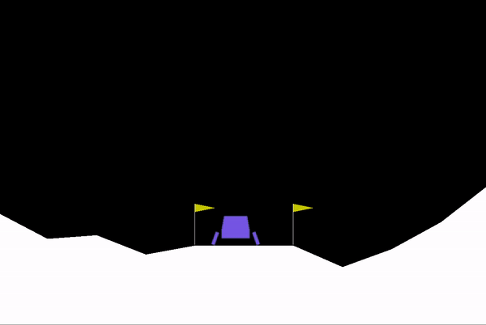
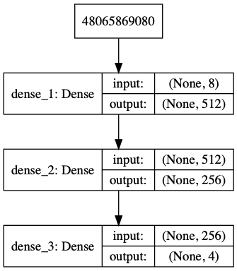
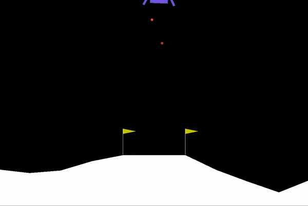
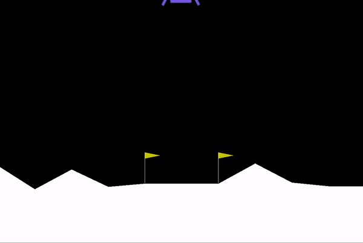

Basic Reinforcement Learning Algorithms#
Implemented some basic Rl examples
Cartpole#
Lunar Lander#
Introduction#
In this article, we will cover a brief introduction to Reinforcement Learning and will learn about how to train a Deep Q-Network(DQN) agent to solve the “Lunar Lander” Environment in OpenAI gym. We will use Google’s Deepmind and Reinforcement Learning Implementation for this.

Reinforcement Learning is a massive topic and we are not going to cover everything here in detail. Instead, the aim of this article is to get your hands dirty with some practical example of reinforcement learning and show the implementation of RL in solving real-world use cases.
We will discuss the rationale behind using the DQN and will cover the Experience Replay and Exploration-Exploitation dilemma encountered while training the Neural Network is discussed as well. In the last, we will discuss the agent’s training and testing performance and the effect of hyper-parameter in the agent’s performance.
The full code can be found here on this github link.
What is Reinforcement Learning?#
Reinforcement learning is one of the most discussed, followed and contemplated topics in artificial intelligence (AI) as it has the potential to transform most businesses.
At the core of reinforcement learning is the concept that optimal behaviour or action is reinforced by a positive reward. Similar to toddlers learning how to walk who adjust actions based on the outcomes they experience such as taking a smaller step if the previous broad step made them fall, machines and software agents use reinforcement learning algorithms to determine the ideal behaviour based upon feedback from the environment. It’s a form of machine learning and therefore a branch of artificial intelligence.
Reinforcement Learning in action#
An example of the reinforcement Learning in Action is AlphaGo Zero which was in the headlines in 2017. AlphaGo is a bot developed by Google that leveraged reinforcement learning and defeated a world champion at the ancient Chinese game of Go. This is the first time artificial intelligence (AI) defeated a professional Go player. Go is considered much more difficult for computers to win than other games such as chess, because its much larger branching factor makes it prohibitively difficult to use traditional AI methods such as alpha–beta pruning, tree traversal and heuristic search
Lunar lander environment#
We are using ‘Lunar Lander’ environment from OpenAI gym. This environment deals with the problem of landing a lander on a landing pad. The steps to set up this environment are mentioned in the OpenAI gym’s GitHub page [1] and on documentation link [2]. Following are the environment variables in brief to understand the environment we are working in.
State: The state/observation is just the current state of the environment. There is an 8-dimensional continuous state space and a discrete action space.
Action: For each state of the environment, the agent takes an action based on its current state. The agent can choose to take action from four discrete actions: do_nothing, fire_left_engine, fire_right_engine and fire_main_engine.
Reward: The agent receives a small negative reward every time it carries out an action. This is done in an attempt to teach the agent to land the rocket as quickly and efficiently as possible. If the lander crashes or comes to rest, the episode is considered complete and it will be receiving additional -100 or +100 points depending on the outcome.
DQN Algorithm#
The deep Q-learning algorithm that includes experience replay and ϵ-greedy exploration is as follows:
initialize replay memory R
initialize action-value function Q (with random weights)
observe initial state s
repeat
select an action a
with probability ϵ select a random action
otherwise select a= argmaxa′Q(s,a′)
carry out action a
observe reward rr and new state s’
store experience <s,a,r,s> in replay memory R
sample random transitions <ss,aa,rr,ss′>from replay memory R
calculate target for each minibatch transition
if ss’ is terminal state then tt =rr otherwise tt =rr + γmaxa′Q(ss′,aa′)
train the Q network using (tt−Q(ss,aa))2 as loss
s=s′
until terminated
Model Training and Hyperparameters Selection#
For running the complete experiment for the ‘Lunar Landing’ environment, we will first train a benchmark model and then do more experiments to find out the effects of changing the hyperparameters on the model performance.
There is no rule of thumb to find out how many hidden layers you need in a neural network. I have conducted different experiments to try different combinations of node sizes for input and hidden layers. Following benchmark model was finalized on the basis of parameters like training time, number of episodes required for training and trained model performance.
Input layer: 512 nodes, observation_space count as input_dim and ‘relu’ activation function
Hidden layer: 1 layer, 256 nodes with ‘relu’ activation function
Output layer: 4 nodes, with ‘linear’ activation function

Still, this model was sometimes diverging after an average reward of 170 and was taking more than 1000 episodes to diverge. I figured out that this behaviour might be attributed to overtraining of the model and implemented ‘Early Stopping’. Early Stopping is the practice to stop the neural networks from overtraining. To implement this, I avoided training the model for a specific episode if the average of the last 10 rewards is more than 180.
Buffer capacity size is chosen of size 500000 to avoid overflow occurring because of large experience tuple. Model is trained for the maximum episode count of 2000 and stopping criteria for the trained model is the average reward of 200 for the last 100 episodes.
Final benchmark model has the following hyperparameters:
learning_rate = 0.001
gamma = 0.99
epsilon replay_memory_buffer_size = 500000
epsilon_decay = 0.995
Initially, as we can see below the agent is very bad at landing, it’s basically taking random actions and receives the negative rewards for crashing the rocket.

After around 300 training episodes, it starts learning how to control and land the rocket.

After 600 the agent is fully trained. It learns to handle the rocket perfectly and lands the rocket perfectly each time.
Result analysis#
Figure 1. The reward for each training episode

Figure 1 shows the reward values per experience at the time of training. Blue lines denote the reward for each training episodes and the orange line shows the rolling mean of the last 100 episodes. The agent keeps learning with the time and the value of the rolling mean increases with the training episodes.
The average reward in the earlier episodes is mostly negative because the agent has just started learning. Eventually, The agent starts performing relatively better and the average reward starts going up and becoming positive after 300 episodes. After 514 episodes the rolling mean crosses 200 and the training concludes. There are a couple of episodes where the agent has received negative awards at this time, but I believe if the agent is allowed to continue training, these instances will reduce.
Figure 2. The reward for each testing episode

Figure 2 shows the performance of the trained model for 100 episodes in the Lunar Lander environment. The trained model is performing well in the environment with all the rewards being positive. The average reward for 100 testing episodes is 205.
Hyperparameter Analysis#
Figure 3. Rewards per episode for different learning rates

Figure 4. Rewards per episode for different gamma values

Figure 5. Rewards per episode for different epsilon(ε) decay
 decay.png)